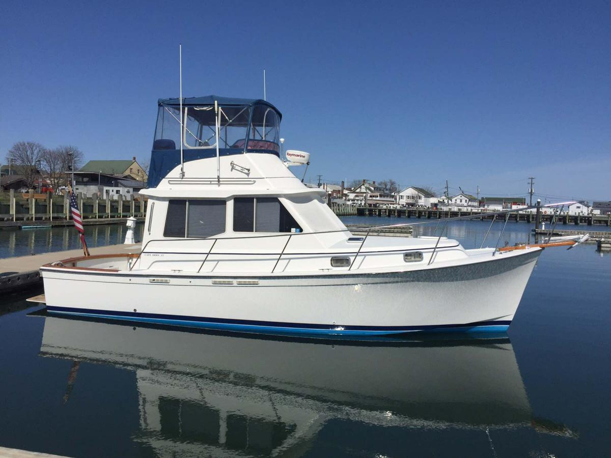

Cape Dory 33 PowerYacht Flybridge
1988–1994
The Cape Dory 33 Power Yacht is a twin-diesel Downeast flybridge cruiser introduced in 1988 as the smaller sister to the 36 Power Yacht. Its modified-V hull, full-length protective keel, lower helm, wide side decks and single private forward stateroom make it a couple-oriented cruising boat rather than an aft-cabin trawler. Period and later sources also call it the 33 Flybridge or 33 Cruiser.

- Length
- 32.83 ft
- Beam
- 12.17 ft
- Draft
- 2.92 ft
- Hull behaviour
- Planing / Modified-V
- Fuel
- Diesel
- Propulsion
- Shaft
- Engine configuration
- Twin Inboard
- Boat family
- Trawler
- Construction
- Fiberglass
Best for
- Cruising couples wanting a traditional twin-diesel flybridge yacht
- Great Lakes and coastal cruising with moderate-speed capability
- Owners who value lower-helm visibility and protected running gear
Trade-offs
- Twin diesels increase service and replacement cost
- Single private stateroom limits guest privacy
- Flybridge adds clearance, ladder-access and enclosure maintenance
- Relatively low production volume limits direct comparables
Known concerns
- No model-specific concern has been promoted to B-Atlas’s evidence threshold. This does not mean the model has no age-, condition- or hull-specific risks.
Inspection focus
- Confirm hull identity, build year and any Newport Shipyards-era continuation documentation
- Inspect deck, cabin and window penetrations for moisture intrusion and previous repairs
- Inspect twin-diesel cooling, exhaust, mounts, shafts, cutlass bearings, rudders and steering
- Inspect fuel, water and holding systems and verify tank capacities
- Test lower and flybridge helm controls and steering
- Verify stall-shower plumbing, seacocks and sanitation systems
Continue researching
Related boat models
30.25 ft · Planing / Modified-V
35.75 ft · Planing / Modified-V
27.92 ft · Semi-Displacement
40 ft · Planing / Modified-V
27.92 ft · Semi-Displacement
27.92 ft · Semi-Displacement
About this record
B-Atlas preserves uncertainty: missing information remains unknown rather than being treated as a negative. Specifications and guidance describe the model record; individual boats can differ by year, equipment, refit and condition.